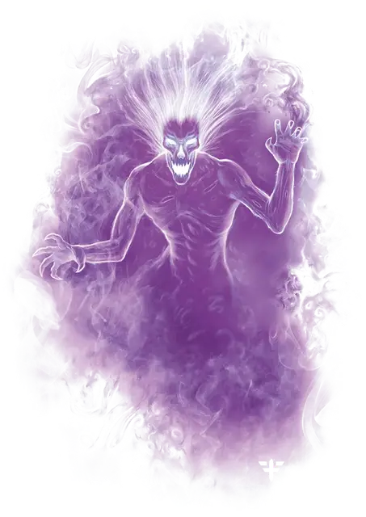

Спектр
Specter
Средняя Нежить, хаотично-злая

Класс Доспеха 12
Хиты 22 (5к8)
Скорость 0 футов, летая 50 футов (парит)
| мод | спас | ||
|---|---|---|---|
| СИЛ | 1 | −5 | −5 |
| ЛОВ | 14 | +2 | +2 |
| ТЕЛ | 11 | +0 | +0 |
| мод | спас | ||
|---|---|---|---|
| ИНТ | 10 | +0 | +0 |
| МДР | 10 | +0 | +0 |
| ХАР | 11 | +0 | +0 |
Сопротивление урону звук, кислота, огонь, холод, электричество; дробящий, колющий, рубящий от немагических атак
Иммунитет к урону некротическая энергия, яд
Иммунитет к состояниям сбивание с ног, паралич, очарование, отравление, опутанность, окаменение, истощение, захват, бессознательность
Чувства тёмное зрение 60 футов, пассивное Восприятие 10
Языки понимает все, известные при жизни, но не говорит
Опасность 1 (200 опыта)
Бонус мастерства +2
Среда обитания Город, Подземье
Особенности
Бестелесное перемещение. Спектр может перемещаться сквозь других существ и предметы, как если бы они были труднопроходимой местностью. Он получает урон силовым полем 5 (1к10), если оканчивает ход внутри предмета.
Чувствительность к солнечному свету. Находясь на солнечном свету, спектр совершает с помехой броски атаки, а также проверки Мудрости (Восприятие), полагающиеся на зрение.
Полтергейст. Полтергейст это разновидность спектра — сбитый с толку невидимый дух того, кто не понимает, как умер. Полтергейст выражает свою ярость, разбрасывая существ и предметы силой расшатанной психики.
У полтергейста показатель опасности 2 (450 опыта), и он обладает дополнительной особенностью:
Невидимость. Полтергейст невидим.
Полтергейст обладает следующими вариантами действий вместо Вытягивания жизни:
Силовой удар. Рукопашная атака оружием: +4 к попаданию, досягаемость 5 футов, одно существо. Попадание: Урон силовым полем 10 (3к6).
Телекинетический рывок. Полтергейст нацеливается на существо или никому не принадлежащий предмет в пределах 30 футов Размер существа должен быть не больше Среднего, а предмет не должен весить больше 150 фунтов.
Если цель — существо, полтергейст совершает проверку Харизмы, противопоставленную проверке Силы цели. Если состязание выигрывает полтергейст, он отбрасывает цель на расстояние до 30 футов в любом направлении, включая вверх. Если цель после этого ударится о твердую поверхность или предмет, она получает урон 1к6 за каждые 10 футов перемещения.
Если цель — предмет, который никто не несет и не носит, полтергейст отбрасывает его на расстояние до 30 футов в любом направлении. Полтергейст может использовать этот предмет как дальнобойное оружие, атакуя одно существо по траектории предмета (+4 к попаданию) и причиняя при попадании дробящий урон 5 (2к4).
Действия
Вытягивание жизни. Рукопашная атака заклинанием: +4 к попаданию, досягаемость 5 футов, одно существо. Попадание: Урон некротической энергией 10 (3к6). Цель должна преуспеть в спасброске Телосложения Сл 10, иначе максимум её хитов уменьшится на количество, равное полученному урону. Это уменьшение длится до тех пор, пока существо не окончит продолжительный отдых. Цель умирает, если этот эффект уменьшает максимум её хитов до 0.
Описание
Спектр это злой свободный дух человека, который был удержан на пути в загробную жизнь. Спектры не имеют представления о том, кем или чем они были раньше, и обречены вечно блуждать по миру. Некоторые из них появились при помощи темной магии или от касания призрака, который вырвал душу из живого тела.
Отсутствие искупления. Когда незавершенные дела привидения, наконец, решаются, оно обретает покой. Но этого не могут испытать спектры. Они обречены бродить по Материальному Плану, и только уничтожение души может принести им забвение. До тех пор они одиноко существуют в заброшенных местах, неся свое бремя в течение многих веков.
Неумолимая ненависть. Живые существа напоминают спектрам, что их жизнь никогда не сможет стать другой. Один лишь вид живого существа переполняет спектра горем и гневом, который утихает только после угасания жизни в существе. Призрак убивает быстро и безжалостно, так как только от быстрого лишения жизни спектр получает облегчение. Однако сколько бы целей спектр не убил — это никогда не потушит огонь ненависти внутри него.
Обитатели тьмы. Солнечный свет — это источник жизни, который не может терпеть ни один спектр. Этот свет причиняет им боль. Когда наступает ночь, они покидают место отдыха в поисках живых существ для убийства, осознавая, что мало какое оружие может навредить им. После первых лучей рассвета они возвращаются в темноту, где остаются до наступления следующей ночи.
Натура нежити. Спектру не нужен воздух, еда, питье и сон.